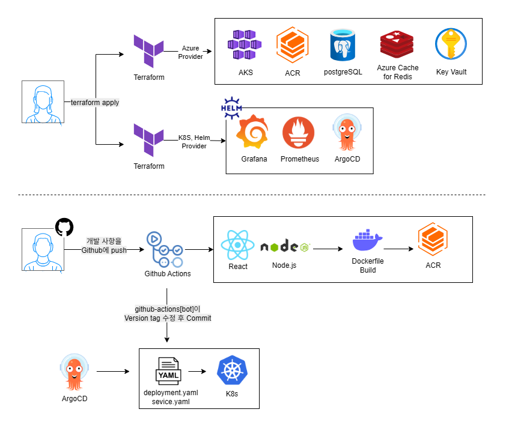

Azure, Kubernetes 기반 실시간 테트리스 매칭 플랫폼
2025년 9월
안정적이고 확장 가능한 게임 서비스를 위한 클라우드 네이티브 인프라 설계 및 자동화
사용 기술
프로젝트 목표
단순한 게임 개발을 넘어, 클라우드 기술(AKS, ACR 등)을 활용하여 안정성, 보안, 확장성 세 가지 핵심 가치를 갖춘 게임 서비스를 구축하는 것을 목표로 했습니다. 사용자들에게는 원활한 실시간 통신과 안전한 데이터 저장을 보장하고, 운영적으로는 트래픽 변동에 유연하게 대응할 수 있는 인프라를 만드는 데 집중했습니다.
주요 역할 및 해결 과정
Terraform을 활용한 인프라 구성 자동화 (IaC): Azure의 모든 리소스를 Terraform 코드로 정의하여 인프라 구축을 자동화했습니다. 수동 설정으로 인한 오류를 방지하고, AKS 클러스터, ACR, 데이터베이스 및 모니터링(Prometheus, Grafana) 환경까지 일관되게 관리할 수 있는 기반을 마련했습니다. 이를 통해 언제든지 동일한 환경을 신속하게 복제하거나 변경할 수 있게 되었습니다.
CI/CD 파이프라인 구축: GitHub Actions와 ArgoCD를 결합하여 GitOps 기반의 CI/CD 파이프라인을 설계했습니다. 개발자가 코드를 GitHub에 Push하면, GitHub Actions가 자동으로 Docker 이미지를 빌드해 ACR에 업로드합니다. 이후 ArgoCD가 GitHub 리포지토리의 Manifest 파일을 감지하고, 클러스터의 상태를 최신 버전으로 자동 동기화하여 안정적인 무중단 배포가 이루어지도록 구현했습니다.
성과
Terraform으로 구축된 코드 기반 인프라(IaC)는 재사용이 가능하여 유사한 프로젝트 진행 시 개발 시간을 단축시키는 효과를 가져왔습니다. 또한, CI/CD 파이프라인을 통해 빌드 및 배포 과정을 자동화함으로써 팀의 개발 생산성이 향상되었고, 운영 안정성을 확보할 수 있었습니다.